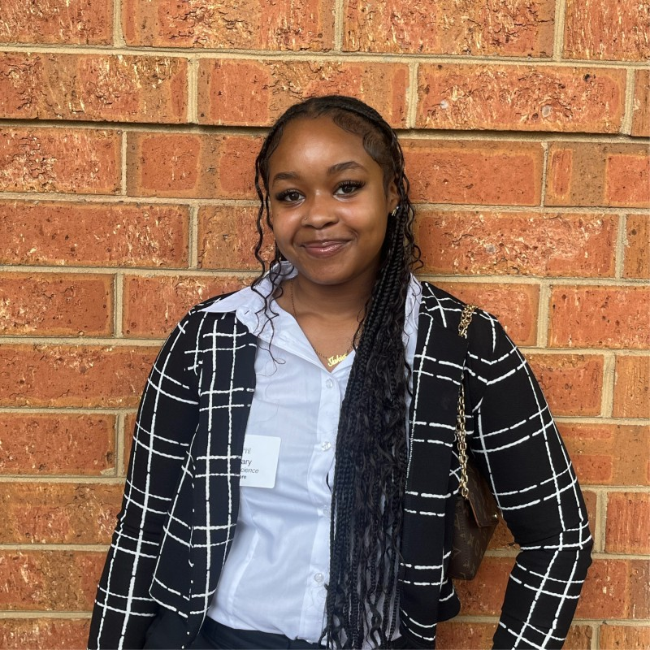

Introduction
Jakia Gary || Joyful Giraffe
- Personal Background: I was born in Athens, GA, but moved to Fayetteville, NC when I was 5.
- Professional Background: I started working in retail and fast food at 15, gaining valuable experience in customer service and teamwork. Last year, I transitioned to a receptionist role, where I've been able to further develop my organizational and communication skills in a professional office setting.
- Academic Background: I started at UNCC in the fall of 2023. Originally, my major was Nursing, but I've always liked technology and wanted to learn more about it.
Courses I'm Taking:
- ITIS3135: I am taking this class because it is required.
- ITSC2175: I am taking this class because it seems interesting to learn, and it is required for my major.
- ITIS3200: I am taking this class because it is required for my major. This class can also lead me to future job opportunities.